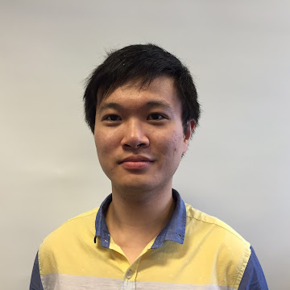

Di Zhao
个人简介
赵迪，男，准聘副教授/特聘研究员，博士生导师。2014年毕业于华中科技大学-信息类数理提高班，获工学学士学位（校优秀毕业生）；2019年毕业于香港科技大学-电子及计算机工程系，获哲学博士学位。现为南京大学机器人与自动化学院准聘副教授。研究方向为：鲁棒控制、安全控制、多模态学习、图像处理等。成果见诸 IEEE Transactions on Automatica Control, Automatica, SIAM Journal on Control and Optimization等期刊。主持国家自然科学基金（青年、面上）、国家重点研发计划子课题、教育部中国高校产学研创新基金、自主智能无人系统全国重点实验室开放课题、同济大学自主原创基础研究项目等科研项目。主要讲授《信号与系统》等课程。拟招收控制理论和人工智能方向的硕士/博士研究生（具体报考建议见下文）。
- 邮箱：dizhao@nju.edu.cn
- 办公：南京大学苏州东校区南雍楼西220
教育和工作背景
- 2025.06-今 南京大学 机器人与自动化学院 准聘副教授
- 2024.01-2025.05 同济大学 控制科学与工程系 预聘副教授
- 2020.12-2023.12 同济大学 控制科学与工程系 助理教授
- 2020.04-2020.12 香港科技大学深圳研究院 网络物理系统实验室 科研主管
- 2019.10-2019.12 香港科技大学 电子级计算机工程系 博士后
- 2014.09-2019.11 香港科技大学 电子级计算机工程系 博士(哲学博士)
- 2010.09-2014.07 华中科技大学 信息类数理提高班 本科(工学学士)
主讲课程
- 信号与系统
研究兴趣
- 控制理论（鲁棒控制、安全控制）
- 人工智能 (面向医学的图像处理和多模态学习)
欢迎报考
每年指导名额：本科生 (大创/毕设/科研，1-2 名)；硕士生 (学硕/专硕，1-2名)；博士生 (直博/普博，1-2名)。
- 本科生。正在为保研或者出国深造做准备，可以在大二申请进入我们的研究团队，读文献、写代码，用 1-2 年的时间打基础，培养你的学术研究兴趣，并完成学术论文。
- 硕士生。建议选择人工智能方向，参与面向医学的图像处理和多模态学习相关课题。此课题为联合课题，与中山医院、复旦大学等顶尖机构共同开展研究。过程中需要学习并掌握面向专病诊断、治疗的数据分析、图像处理、机器学习等技术，协同联合团队实现相关技术并完成高质量期刊论文撰写。
- 博士生。博士生可选择人工智能或控制理论方向。
- 若选择人工智能方向，相关任务与硕士生类似，需要申请人具有良好的编程基础和人工智能相关知识，对探索新方法和新技术具有浓厚的兴趣，将长期投入到人工智能算法研究和部署并争取发表高质量期刊（人工智能领域、医学领域或综合类）。
- 若选择控制理论方向，需要申请人具有较强的数理基础并对解决理论问题有浓厚兴趣，对线性/高等代数、矩阵分析、数学分析、复分析、算子理论等课程知识掌握良好或具有学习兴趣，将与我共同解决控制理论相关问题并争取发表领域内顶刊。
如果你不确定想要做什么，欢迎来找我交流。
一点理解：学术是一条很长的路，有很多风景也有很多坎坷，还会有很多志同道合的朋友；如果你有探索未知的勇气和沉稳坚韧的性格，那么你可以试着走这条路。